Anthropic vient de lancer Claude Duet, leur tout nouvel assistant IA personnel, et je vais être honnête, je ne sais pas encore trop quoi en penser. Je n'ai pas eu d'accès anticipé, mais j'ai enfin obtenu l'accès grâce à la liste d'attente. Donc, dans cette vidéo, je vais le tester en direct, ici même avec vous. Je vais vous expliquer exactement comment il fonctionne, vous montrer certaines choses que j' vraiment adore là-dedans, et d'autres que je n'aime pas du tout. Et ensuite, je vais vous donner mon avis sincère en le comparant à GrokBot, que j'utilise tous les jours depuis deux mois pour m'aider à gérer mon entreprise. Et c'est probablement l'outil d'IA que j'ai préféré utiliser jusqu'à présent.
Interface & Outils : Interface de discussion sur ordinateur portable / application de messagerie.
Contenu textuel & Code : Texte de messages de chat et logo 'Meet Grok Bot'.
Action / Démonstration : Navigation sur l'application de messagerie et utilisation du clavier de l'ordinateur portable.
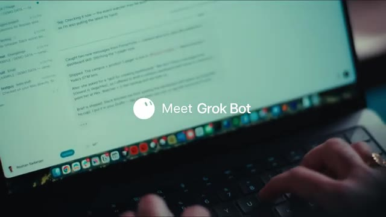
🔍 AgrandirAlors, sans plus attendre, plongeons-nous dedans. Très bien. Donc maintenant, voilà ce que nous allons voir à l'intérieur de notre point. Si je clique sur notre point, il y a plusieurs choses. Donc vous pouvez voir les différentes choses auxquelles il a accès. Nous avons donc des fichiers et nos documents. Nous avons notre courrier. Nous avons notre calendrier, le chat d'équipe, les paiements. On dirait qu'il ne peut pas encore effectuer de paiements, mais nous pouvons en fait ajouter des moyens de paiement ici également. Donc en gros, il est dit : « Hé Brock, bienvenue. C'est notre premier jour de travail ensemble. Je vais t'aider à rester au top de ton travail et de ta vie. Chaque jour, je vais apprendre à te connaître un peu mieux. Au fil du temps, je commencerai à repérer ce dont tu as besoin avant même que tu ne le demandes. »
Interface & Outils : Application mobile Claude sur interface iOS (TestFlight) avec une maquette de smartphone incrustée à l'écran.
Contenu textuel & Code : Liste des accès de Claude (« What Claude has access to ») : Files and docs, Mail, Calendar, Team chat, Payments, More apps.
Action / Démonstration : Le présentateur présente et détaille les différentes fonctionnalités et autorisations d'accès de l'application Claude sur mobile.
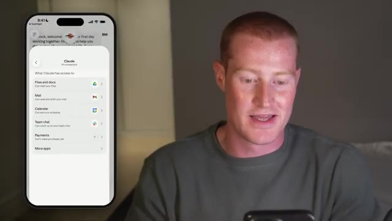
🔍 AgrandirEt c'est une partie proactive de ce Claude Duet dont ils ont parlé dans l'article de sortie. Donc, comme vous pouvez le remarquer en bas à droite de mon écran, nous avons cette petite icône vocale. Alors, laissez-moi tester ceci et voir comment nous pouvons réellement parler avec notre agent Duet. Hé, quoi de neuf, Duet ? Comment ça va ? Hé, Brock. Je vais très bien, merci. Comment se passe la vidéo sur Claude Duet ?
Interface & Outils : Application mobile Claude Duet sur smartphone.
Contenu textuel & Code : Interface de chat avec options de message vocal et texte.
Action / Démonstration : Démonstration de l'utilisation de l'assistant vocal Claude Duet sur mobile.
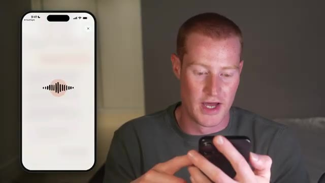
🔍 AgrandirÇa va plutôt bien. Est-ce que tu pourrais me rendre un service très rapidement ? Je veux faire un test dans la vidéo. En gros, je veux voir ce qu'il y a sur mon agenda pour les prochains jours. Est-ce que tu peux regarder dans mon agenda et me dire ? Bien sûr. Laisse-moi vérifier ton agenda. Aujourd'hui et vendredi sont totalement libres, Brock. Samedi, tu rentres chez toi en avion. De Lisbonne à Washington à 12h20, puis de Washington à Dallas à 18h. Parfait. Merci beaucoup. Très bien. Donc ça, c'est le mode vocal. Le son est vraiment bon. En fait, c'est très rapide. La latence est très faible. Et ensuite, je veux faire un tour
Interface & Outils : Application mobile avec assistant vocal.
Contenu textuel & Code : Interface d'assistant vocal avec une onde sonore animée au centre de l'écran.
Action / Démonstration : Le présentateur utilise l'assistant vocal sur son smartphone pour consulter son agenda.
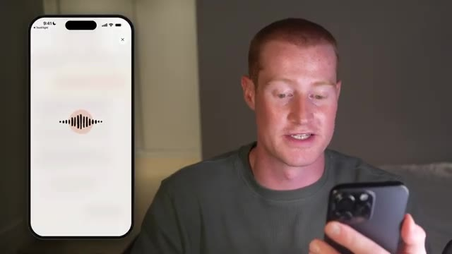
🔍 Agrandirpartout dans le reste de l'interface ici. Donc je vais aller sur les trois petits points juste ici. Donc, en principe, nous pourrions avoir différents canaux et je vais analyser ça tout de suite. Donc, comme vous pouvez le voir juste ici, il est écrit « restez concentré avec les canaux », donnez à chaque sujet sa propre place pour les messages, les tâches et les fichiers. Donc, je suppose que c'est une façon pour nous de segmenter différentes parties de notre vie ou de notre entreprise à l'intérieur de Claude Duet. De cette façon, tout n'est pas regroupé dans une seule conversation persistante, ce qui, je suppose, se transformerait alors en bazar. Donc, juste ici, il est écrit tout.
Interface & Outils : Application mobile sur smartphone (interface de type application de messagerie ou d'intelligence artificielle).
Contenu textuel & Code : Texte d'aide "Get focused with channels" et options de gestion de canaux ("Everything", "+ New channel").
Action / Démonstration : Présentation des fonctionnalités de l'application mobile et navigation dans les menus de canaux.
Allons-y et créons un nouveau canal. Je vais appeler celui-ci vidéos YouTube. Et puis pour l'objectif, je vais simplement dire tout ce qui concerne les vidéos YouTube. Je pourrais changer l'icône. Alors allons-y et changeons peut-être ceci en un bouton de lecture, changeons-le en rouge. De cette façon, cela indique que c'est YouTube. Je vais cliquer sur créer. Très bien, c'est parti. Nous avons maintenant notre canal, qui s'appelle vidéos YouTube. Et cela semble très similaire à Slack en fait, en termes d'avoir différents canaux. Il y a le hashtag vidéos YouTube en haut de notre écran, comme vous pouvez le voir juste ici. Et cela m'invite également et me demande si je voulais suggérer des tâches qu'il
Interface & Outils : Application mobile sur smartphone avec affichage du clavier virtuel et écran de création de canal ("New channel").
Contenu textuel & Code : Champs de texte "Name" rempli avec "YouTube Videos" et "Purpose" avec "Everything YT video relate".
Action / Démonstration : Le présentateur tape du texte sur son smartphone pour configurer le nom et l'objectif d'un nouveau canal.
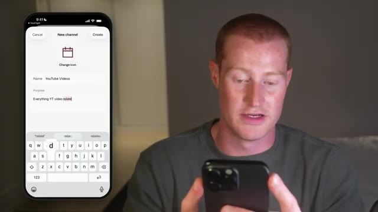
🔍 Agrandirpeut faire pour moi. Donc je vais juste cliquer sur oui. Et je suis curieux de voir ce que ça va sortir en termes de ce que ça peut faire pour moi. D'accord, donc emballer votre prochaine vidéo, des idées de titres, de vignettes, une accroche et des choix ABC, etc. Donc ce que je vais faire, c'est que je vais en fait lui demander d'aller vérifier mes analyses. Je suis donc curieux de voir s'il est capable de se connecter à la base de données interne de Supabase où je stocke fondamentalement toutes mes vidéos YouTube préexistantes ainsi que certaines de mes idées. Je suis donc curieux de voir s'il va être capable d'aller chercher tout ce contexte à partir de mes conversations précédentes sur le code Cloud et des tâches que j'ai exécutées. Maintenant, c'est plutôt cool. Ça montre que ça fonctionne sur
Interface & Outils : Application mobile de messagerie intelligente avec interface de chat et suggestions de tâches.
Contenu textuel & Code : Texte de l'IA proposant de l'aide pour structurer les vidéos (titres, vignettes, accroches) et boutons de sélection rapide ("Package a video", "Check my analytics", "Find trending topics").
Action / Démonstration : Le présentateur manipule son téléphone et interagit avec l'application pour tester les fonctionnalités proposées par l'assistant IA.
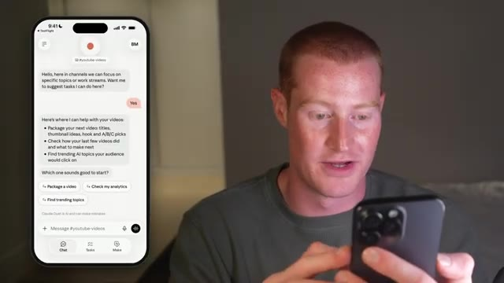
🔍 Agrandiravec cette petite icône qui tourne ici. Je pourrais cliquer dessus et ensuite, maintenant, ça fait apparaître ceci juste ici. Vous pouvez voir tout ce sur quoi il travaille, toutes les tâches une par une. C'est plutôt cool. Et ensuite, si je clique sur ce bouton des tâches en bas de mon écran, nous pourrions également voir toutes nos tâches actives ainsi que nos tâches à venir également. Donc, pendant qu'il travaille encore sur cette tâche, je veux venir ici et tester ceci là où il est écrit « créer » en bas à droite de mon écran.
Interface & Outils : Application mobile Claude (Interface de chat IA avec suivi des tâches)
Contenu textuel & Code : Interface mobile affichant une liste de tâches de l'assistant (« What Claude is doing » : Pull analytics for your recent videos, Spot what's working and what isn't, Suggest what to make next).
Action / Démonstration : Le présentateur consulte sur son téléphone l'avancement des tâches en cours exécutées par l'assistant IA Claude.
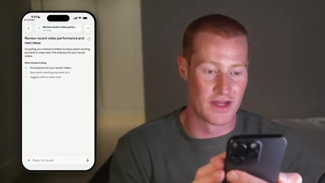
🔍 AgrandirDonc, juste ici, il semble que ce soit l'ensemble des documents dont je dispose. Donc, tous mes artéfacts que j'ai créés, des documents PDF, des fichiers CSV, tous mes documents Claude, absolument tout. Donc, par exemple, si je viens ici, je pourrais consulter le script Claude Duet que j'ai créé pour une vidéo courte sur laquelle je travaillais plus tôt. Et j'ai fait cela à l'intérieur de Claude Code en fait, mais je pourrais voir tous ces petits actifs juste ici. Donc, par exemple, je pourrais réellement afficher toutes ces différentes présentations que j'ai faites avec Claude Presentations. C'est donc plutôt cool que nous puissions accéder à toutes ces informations. Le point principal ici est donc qu'il est capable de regrouper tous ces
Interface & Outils : Application mobile de gestion de documents et de projets (type interface de workspace d'intelligence artificielle).
Contenu textuel & Code : Listes de documents (« Documents 36 », « Claude Duet: Short Script », « Dashboards », « Pages », « Presentations »).
Action / Démonstration : Le présentateur navigue et présente l'ensemble des fichiers, artéfacts et documents créés dans l'application mobile.
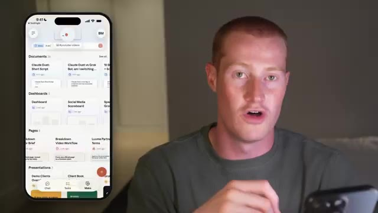
🔍 Agrandirle contexte de nos conversations précédentes sur Cloud, à la fois dans Cloud Code, Cloud Chat, Cloud Cowork, pratiquement tout l'écosystème et toutes les informations de mon compte. Je peux même venir ici, cliquer sur plus, et je peux aller générer n'importe lequel de ces types de médias également. Disons donc que je veux créer un tableau de bord. Je peux simplement venir ici et cliquer sur tableau de bord, puis dire tout simplement, j'ai donc juste dit de créer un tableau de bord pour mes trois dernières vidéos courtes. Et il va aller chercher dans Supabase où sont stockées toutes ces informations. Et il va me générer ceci. Je suis donc curieux de voir à quoi va ressembler le résultat ici. Mais jusqu'à présent,
Interface & Outils : Application mobile (interface de type interface utilisateur d'assistant IA ou gestion de documents).
Contenu textuel & Code : Vues d'onglets de documents, tableaux de bord et options de navigation (Chat, Tasks, Make).
Action / Démonstration : Présentation de l'interface mobile de l'écosystème d'IA.
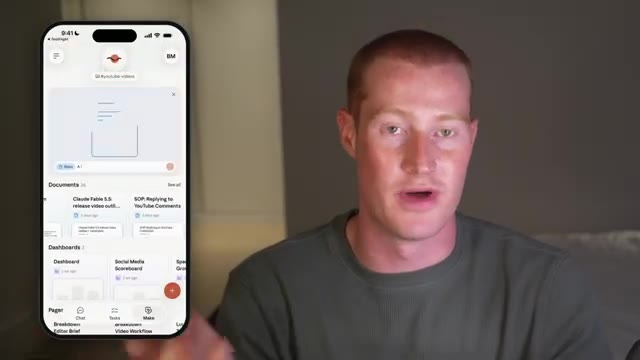
🔍 Agrandircette expérience est plutôt intuitive et j'apprécie. Très bien. Donc si je retourne dans les tâches, vous pouvez voir là où il est écrit actif, il y a une tâche qui est prête pour révision. Donc j'aime bien la façon dont ça montre cette liste de choses qui nécessitent mon attention, ainsi que des choses sur lesquelles il travaille également. Donc si je clique sur actif, ça va afficher ceci. Donc vous avez eu un gros mois, les 28 derniers jours ont rapporté 1,35 million de vues. Vraiment cool. Donc le point principal ici, c'est que ça peut aller chercher des données dans la base de données que j'ai configurée à l'intérieur de Cloud Code. Et c'est vraiment, vraiment cool et vraiment chouette. Très bien. Donc en retournant sur ce tableau de bord que nous avons créé maintenant à l'intérieur de mon agent
Interface & Outils : Application mobile (interface de gestion de tâches / productivité) affichée sur maquette de smartphone.
Contenu textuel & Code : Liste de tâches avec les onglets "Active" et "Up next", affichant "Ready for review" (Review recent video performance and next ideas) et "Working" (Dashboard: Create a dashboard for my previous 3 short videos).
Action / Démonstration : Présentation de la liste des tâches actives et des éléments prêts pour révision dans l'application mobile.
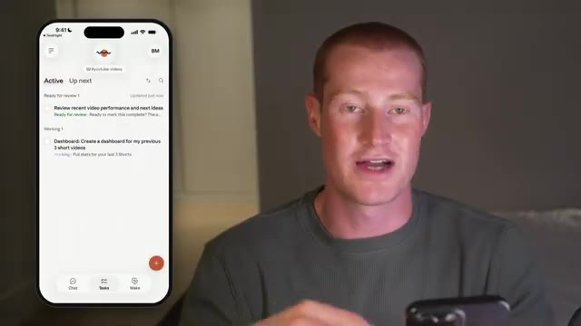
🔍 Agrandirjuste ici, ça montre cette petite icône. Donc je vais cliquer sur le tableau de bord des shorts et ça a fini par créer ça pour moi. Donc si je clique dessus, ça va l'ouvrir et ça me montre une ventilation visuelle, une disposition visuelle des trois derniers shorts. Donc ça montre ces petites cartes ici avec chaque vidéo, ça montre le nombre de vues, ça montre les j'aime et l'engagement. Je pense que ça a l'air vraiment solide. Le fait que j'aie demandé à Claude de générer ça pour moi automatiquement et qu'il me l'ait envoyé dans le chat. C'est cool. Ça montre ces petites barres juste ici. Je pense que c'est une façon assez intuitive d'interagir avec Claude via Claude Duet. Et maintenant, ce que je pourrais faire, c'est que je pourrais toujours venir
Interface & Outils : Application mobile avec interface de statistiques et tableau de bord analytique.
Contenu textuel & Code : Statistiques de vues (7 300 vues), likes (126), commentaires (31), partages (83), taux de rétention (« Stayed to watch » à 42,9 %), et comparaison côte à côte des performances de différents contenus (« Side by side »).
Action / Démonstration : Le présentateur commente la ventilation visuelle et la disposition des cartes analytiques pour les derniers shorts générées par l'application.
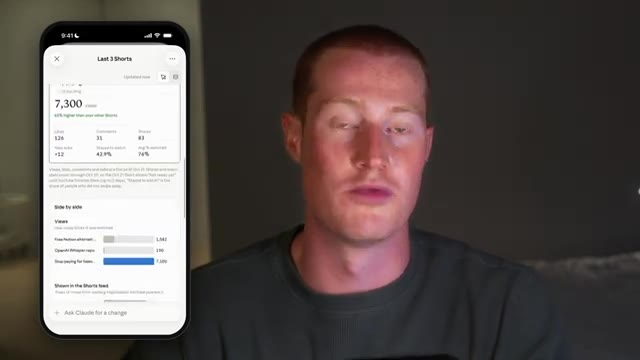
🔍 Agrandirici et cliquez sur la section de création et je pouvais toujours voir ces différentes espèces d'artefacts, je suppose que c'est comme ça que je vais les appeler, même si je ne suis pas sûr de ce que Claude veut appeler ces éléments. Je suppose que ce sont des artefacts. Vous pouvez donc voir tous les artefacts ici même, ce qui est vraiment cool. N'importe quel actif qu'il génère, je suis capable de le voir ici même. Et encore une fois, y compris les précédents provenant de l'intérieur de Claude Code ou de Claude précédemment jusqu'à ce point.
Interface & Outils : Application mobile Claude (Interface utilisateur mobile / Artifacts)
Contenu textuel & Code : Liste de documents et d'artefacts récents, interface de chat et de création ("Make").
Action / Démonstration : Navigation et présentation des sections de création et des documents de l'application Claude.
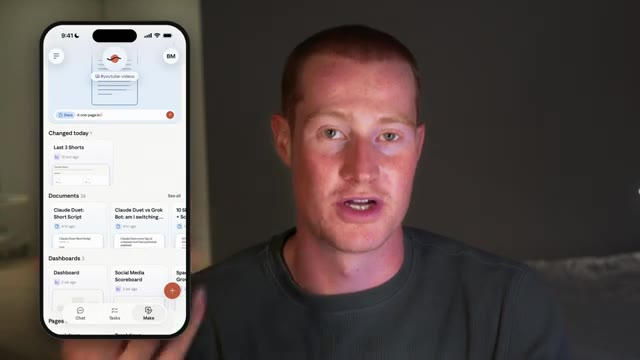
🔍 AgrandirMaintenant, une chose que je voulais que Claude Duet soit capable de faire, c'est extraire mes statistiques de marketing par e-mail de Drip, qui est l'application que j'utilise pour exécuter mes campagnes de marketing par e-mail. Donc, par exemple, je veux pouvoir demander comment ma dernière campagne de marketing par e-mail s'est déroulée directement depuis mon téléphone. Mais le problème, c'est que si je viens voir les connecteurs à l'intérieur de Claude et que je cherche Drip, il n'y a pas de connecteur Drip.
Interface & Outils : Navigateur web affichant le site Drip et l'interface de configuration/connecteurs de Claude (Anthropic).
Contenu textuel & Code : Page d'accueil de la plateforme d'e-mailing Drip et interface de gestion des connecteurs/intégrations de Claude (section "Customize", "Connectors").
Action / Démonstration : Navigation et présentation visuelle des intégrations possibles entre l'outil d'e-mailing Drip et les connecteurs de Claude.
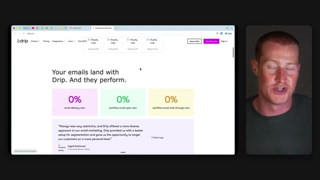
🔍 Agrandir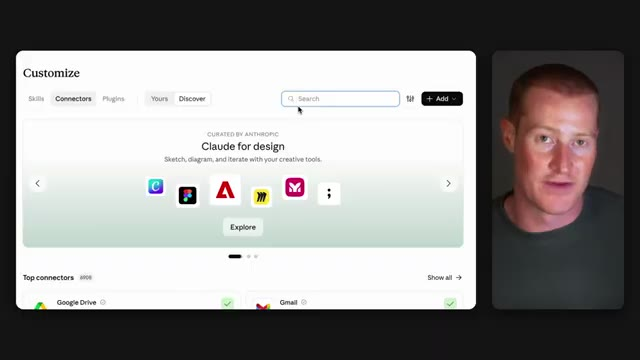
🔍 AgrandirEt pour l'instant, je ne sais pas s'il y a un moyen d'ajouter des connecteurs directement à l'intérieur de Claude Duet en ce moment, mais il utilise les mêmes connecteurs que possède votre compte Claude. Nous pouvons donc aller les configurer sur notre ordinateur. Alors, pour contourner cela, je vais utiliser le MCP de Zapier, qui permet fondamentalement à Claude ou à n'importe lequel de vos autres agents IA de se connecter à plus de 9 000 connexions d'applications.
Interface & Outils : Application Claude Duet (schéma illustratif)
Contenu textuel & Code : Icône « claude duet » et un encadré « + connector » suivi d'un point d'interrogation.
Action / Démonstration : Le présentateur explique les limites actuelles des connecteurs dans Claude Duet.
Donc, afin de faire cela, je vais venir sur Zapier MCP. Et si vous voulez l'utiliser, il y a aura un lien dans la description pour l'utiliser vous-même. Ensuite, sur le côté gauche, une fois que je suis à l'intérieur de mon compte, je vais cliquer sur serveurs MCP, ce qui est l'endroit où nous configurons ceux-ci. Et je vais cliquer sur créer un serveur. Ensuite, il va demander quel outil d'IA nous voulons connecter.
Interface & Outils : Navigateur web affichant l'interface de la plateforme Zapier MCP et le présentateur en incrustation vidéo.
Contenu textuel & Code : Page de présentation de Zapier MCP avec options de connexion et panneau de configuration du compte utilisateur incluant les serveurs MCP.
Action / Démonstration : Navigation sur le site de Zapier et sélection de l'option des serveurs MCP dans le menu latéral.
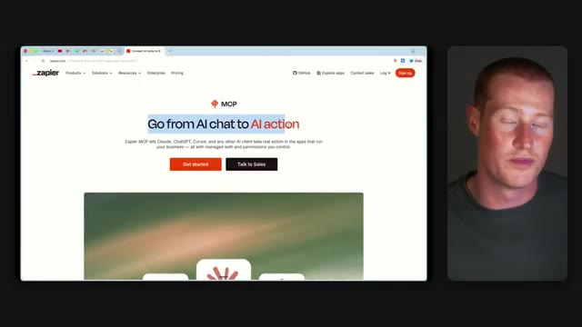
🔍 Agrandir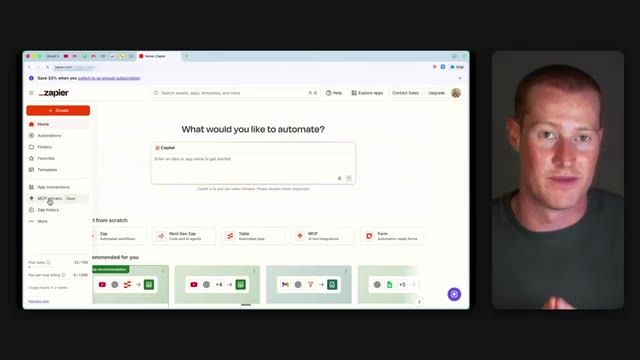
🔍 AgrandirDonc vous avez des options comme Claude, Claude Code, Chachabutee, Cursor, et même GrokBot. Donc je vais simplement cliquer sur Claude Code pour cette instance. Et ensuite je vais cliquer sur Terminer la connexion. Ensuite tout ce que j'ai à faire est de copier ce prompt, de le coller à nouveau dans Claude Code, et ça va configurer l'ensemble pour moi. Maintenant, pendant que ça s'exécute, je vais aller dans Applications, qui est l'endroit où nous choisissons les applications que nous voulons que Zapri utilise.
Interface & Outils : Interface web de configuration MCP (Model Context Protocol) avec panneau de gestion des clients et des serveurs.
Contenu textuel & Code : Avertissement de migration de client MCP et liste des clients connectés avec leur statut de connexion (Pending).
Action / Démonstration : Le présentateur clique pour confirmer le transfert du client vers le serveur et finaliser la configuration de la connexion.
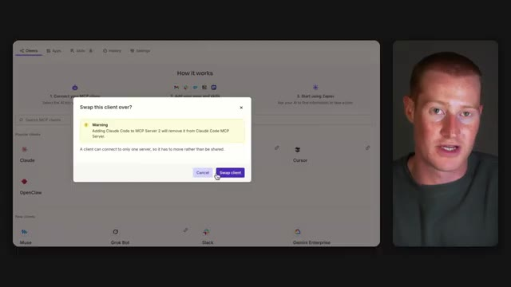
🔍 Agrandir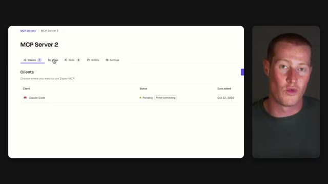
🔍 AgrandirEt je vais chercher Drip. Et comme vous pouvez le voir juste ici, Drip propose sept outils différents que Claude peut utiliser, de sorte qu'il peut récupérer mes statistiques et même faire des choses comme étiqueter des abonnés ou ajouter quelqu'un à une campagne. Je vais donc simplement cliquer sur connecter, me connecter à mon compte Drip, et c'est tout. Et c'est à peu près tout aussi facile de faire cela avec n'importe laquelle des autres applications que vous utilisez au jour le jour.
Interface & Outils : Interface web de configuration d'application (Zapier ou similaire).
Contenu textuel & Code : Liste des outils Drip disponibles pour l'intégration, incluant des options telles que "Select All Tools", "Trigger event", "Remove Tag From Subscriber", "Subscribe to Campaign", etc.
Action / Démonstration : Sélection des outils Drip pour configurer les actions automatisées.
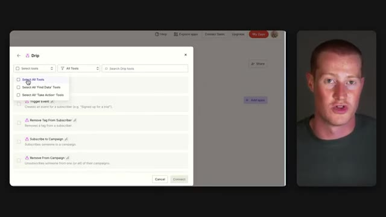
🔍 AgrandirAlors maintenant, si je viens sur Claude Duet sur mon téléphone, je vais simplement lui demander comment s'est passée ma dernière campagne de marketing par e-mail. Et je vais même lui demander de générer un tableau de bord pour visualiser toutes ces données pour moi également. Je vais venir ici, dans mon fil de marketing par e-mail que je viens de créer dans Claude Duet. Je vais simplement dire, hé, je veux que tu ailles récupérer les détails de ma campagne de marketing par e-mail pour le dernier e-mail que j'ai envoyé. Et je veux que tu transformes réellement cela en un tableau de bord et que tu me montres le résultat ici même. Maintenant, encore une fois, nous pouvons toujours voir la tâche ici même. Donc, si je veux cliquer dessus, cela va alors amener
Interface & Outils : Application mobile de chat IA (Claude Duet / interface de messagerie).
Contenu textuel & Code : Interface de discussion mobile avec un canal nommé « #email-marketing » et un message de bienvenue de l'assistant IA.
Action / Démonstration : Présentation de l'utilisation d'une application mobile d'intelligence artificielle pour analyser des campagnes marketing.
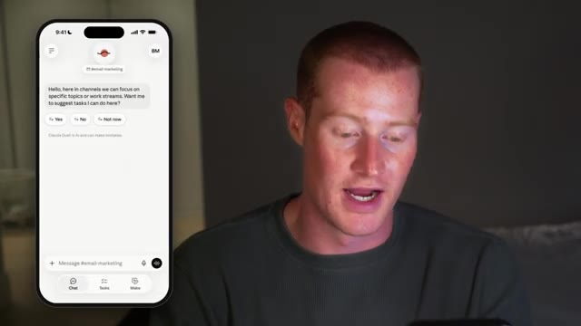
🔍 Agrandirnous amener à notre tâche et cela montre exactement ce que c'est, sur quoi il travaille. Et je pourrais venir cliquer sur les tâches et ça va montrer cela aussi, ainsi que toutes les tâches qui sont à venir, ce qui donne l'impression que nous avons toutes les effacées. Très bien. Et juste comme ça, environ une minute plus tard, nous avons maintenant ce message ici. Il a extrait les statistiques de notre campagne de marketing par e-mail dans Drip via cette application ici sur MCP. Si je clique là-dessus, cela m'amène au tableau de bord qu'il a créé.
Interface & Outils : Application mobile de gestion de tâches.
Contenu textuel & Code : Onglets « Active », « Up next », et une tâche intitulée « Dashboard for your last email campaign ».
Action / Démonstration : Présentation de l'interface utilisateur de l'application de tâches sur smartphone.
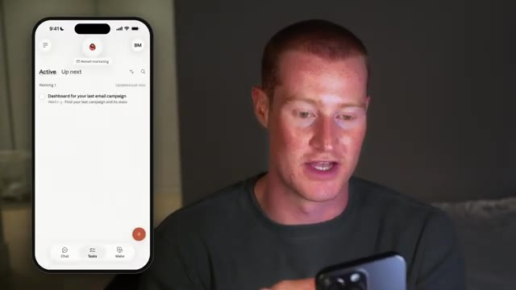
🔍 AgrandirTrès bien. Et juste comme ça, nous avons maintenant ce tableau de bord avec toutes les statistiques tirées de notre compte Drip. Il montre le taux d'ouverture, montre le taux de clics, montre le taux de désabonnement, le taux de livraison, et montre même où les spectateurs ou les lecteurs ont décroché. Je trouve ça vraiment génial. Et encore une fois, cela n'aurait pas été possible si nous n'avions pas connecté cela à Drip via le MCP Zapier. Très bien. Donc maintenant que nous avons réellement testé Claude Duet, je veux le comparer à mon expérience avec GrokBot. J'utilise GrokBot tous les jours, et c'est probablement mon outil d'IA préféré parmi tous ceux que j'utilisables. Donc tout d'abord, ce que j'aime vraiment chez GrokBot, c'est que je peux avoir plusieurs
Interface & Outils : Application mobile Drip, interface de messagerie ou de gestion de bots.
Contenu textuel & Code : Statistiques d'e-mailing (taux d'ouverture 5 344, taux de livraison 99.92%, désabonnement 0.44%, taux de clics 47) et liste d'agents (Content Bot, Inbox Triage, Invoice Agent).
Action / Démonstration : Présentation des métriques d'e-mailing et du tableau de bord marketing de l'application Drip.
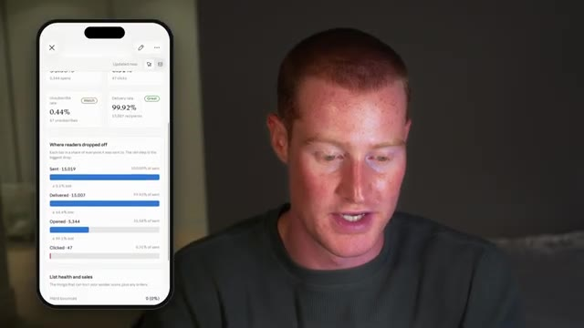
🔍 Agrandirdifférents agents d'IA qui communiquent réellement entre eux. Par exemple, j'ai mon agent principal à qui je parle la plupart du temps, et il travaille essentiellement avec mes autres agents, comme mon agent de facturation et mon agent YouTube, de sorte qu'il dispose ainsi de tout le contexte de chacun d'eux. Et je peux avoir autant de bots que je veux, ou juste un seul agent principal, donc c'est très simple et ça ne fait pas du tout encombré. Je trouve aussi que l'interface a vraiment l'air cool et simple, comme toutes les différentes couleurs pour chacun de ces différents bots. Et c'est très adapté aux débutants, ce qui explique pourquoi je recommande cet outil à tout le monde. Maintenant, du côté de Claude Duet, un truc que j'aime vraiment, c'est la section de création où je peux voir
Interface & Outils : Schéma explicatif animé / Interface de présentation visuelle.
Contenu textuel & Code : Un cercle violet central étiqueté « main » avec une couronne, entouré de quatre autres icônes/formes colorées (vert, bleu, orange) symbolisant différents agents d'IA interconnectés.
Action / Démonstration : Le présentateur explique la structure et la communication entre les différents agents d'IA de son système.
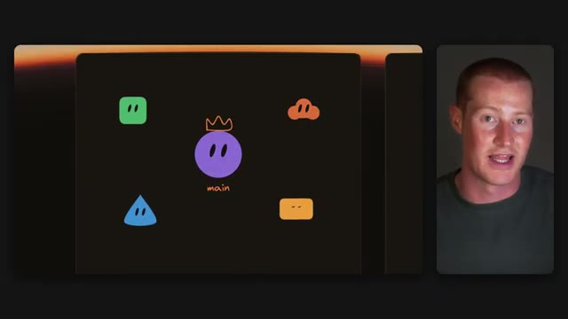
🔍 Agrandirchaque artefact qui est généré comme mes présentations et tous mes différents tableaux de bord. Et je pense que c'est très important parce que Claude a été vraiment doué pour créer des artefacts et c'est quelque chose que je n'ai pas vraiment encore vu à l'intérieur de GrokBot. J'aime aussi beaucoup la section des tâches ici même, car je pouvais voir sur quoi il travaille et ce qui arrive ensuite à tout moment. Et cela inclut même des choses que je ne lui ai pas dit de faire. Donc, par exemple, si j'ai un e-mail important qui arrive, il va le voir et l'ajouter à la liste des choses qu'il doit faire pour demain.
Interface & Outils : Interface d'application mobile conceptuelle (maquette de design) et application mobile fonctionnelle.
Contenu textuel & Code : Maquettes graphiques d'interface, blocs de contenu (textes, aperçus, graphiques en barres), et liste de tâches structurées. [DESC_IMAGE_3] Présentation visuelle de la structure d'une application mobile et de ses fonctionnalités de gestion des tâches.
Action / Démonstration : Explications face caméra et analyse conceptuelle des marchés.
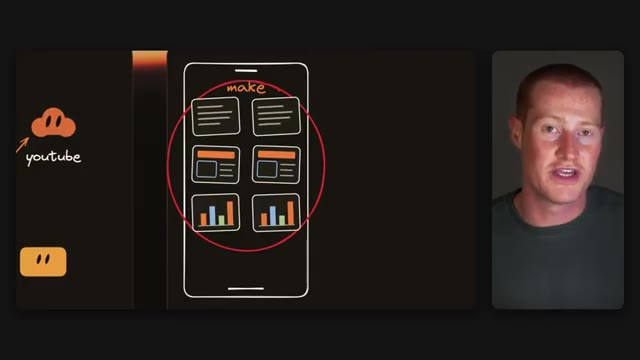
🔍 Agrandir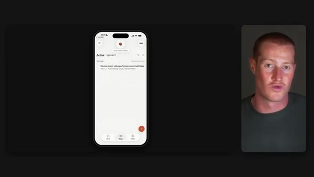
🔍 Agrandir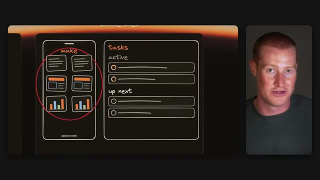
🔍 AgrandirJe trouve vraiment que c’est une touche intéressante pour cette interface, et je pense que cela pourrait être une expérience vraiment sympa à mesure que je l’utilise davantage. Maintenant, les canaux sont intéressants, mais je ne sais pas encore trop quoi en penser. Je pense quand même que je préfère la façon dont GrokBot procède avec des agents séparés. Je trouve juste que c’ens est une expérience plus épurée. Mais encore une fois, je n’ai utilisé ceci que pendant quelques heures, alors j’ai peut-être juste besoin de l’essayer un peu plus avant de me décider.
Interface & Outils : Interface de présentation ou croquis conceptuel.
Contenu textuel & Code : Schémas d'une interface mobile et de listes de tâches annotées à la main.
Action / Démonstration : Le présentateur commente la conception de l'interface affichée à l'écran.
Et la dernière chose dont je veux parler, c'est que je n'ai utilisé Claude Duet que sur mon téléphone jusqu'à présent. Je suis donc vraiment curieux de voir comment il fonctionne sur l'ordinateur, car c'est probablement là que je vais l'utiliser la plupart du temps, à moins que je ne sois en déplacement. Très bien. C'est donc mon premier aperçu de Claude Duet et une comparaison avec mon expérience de GrokBot. J'espère que vous avez aimé cette vidéo. À l'heure actuelle, vous pouvez vous inscrire sur la liste d'attente, mais vous devez vous trouver aux États-Unis pour pouvoir y accéder.
Interface & Outils : Aucune interface de trading, de terminal ou de code source affichée.
Contenu textuel & Code : Aucun code, prompt ou indicateur technique pertinent.
Action / Démonstration : Le présentateur parle à l'écran sans effectuer de démonstration pratique.
Donc, vous pouvez vous inscrire. Il y a un lien dans la description. Et faites-moi aussi savoir dans les commentaires si vous allez passer de GrokBot à Claude Duet. Je suis vraiment curieux de voir ce que vous allez utiliser. Quoi qu'il en soit, merci d'avoir regardé jusqu'à la fin et je vous vois dans la prochaine vidéo. Salut.
Interface & Outils : Aucune interface logicielle ou graphique affichée.
Contenu textuel & Code : Aucun code, indicateur ou donnée chiffrée.
Action / Démonstration : Le présentateur s'adresse directement au public pour conclure la vidéo.